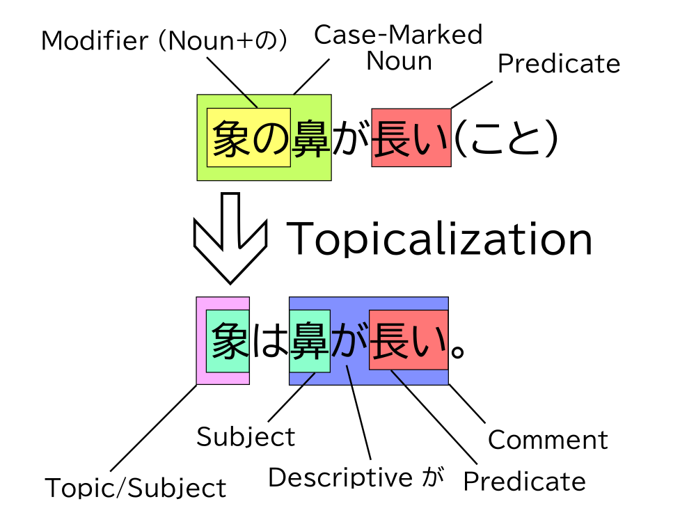
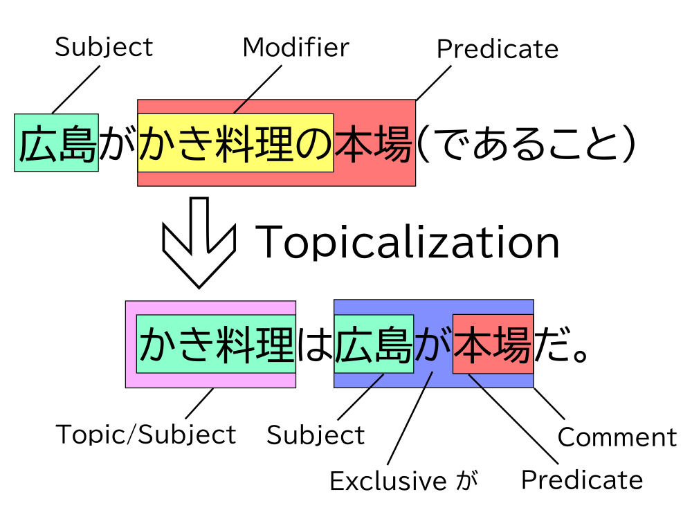
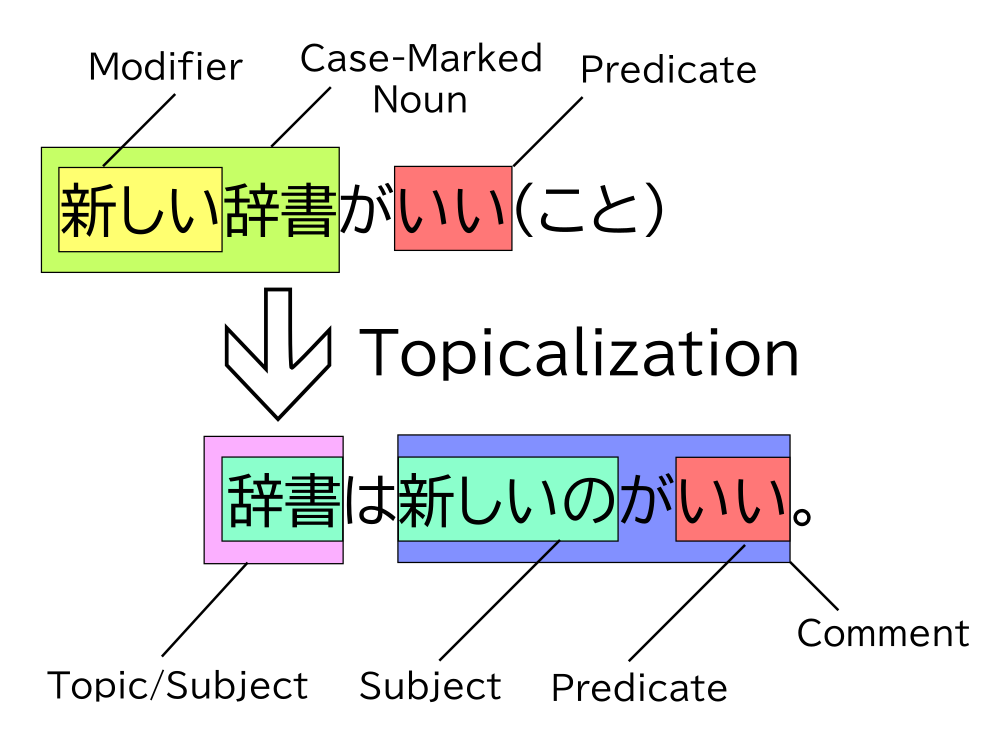
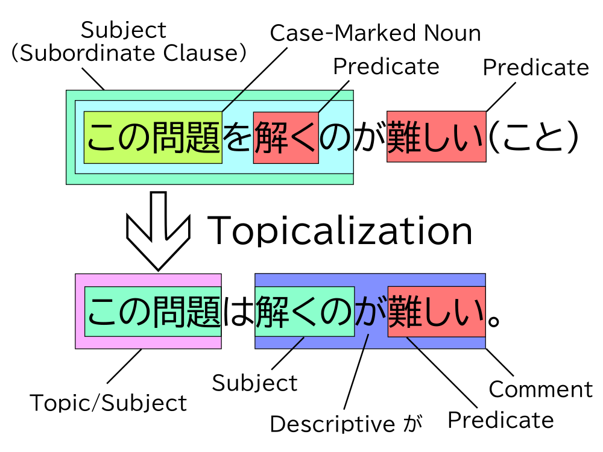
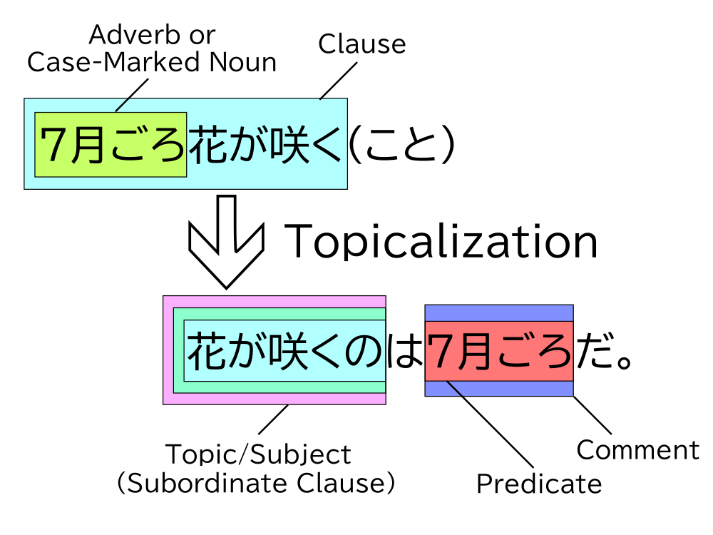

This article is one in a series that comprehensively explains usage of は vs. が in Japanese. Most content is directly pulled from 『｢は｣ と ｢が｣』 by Hisashi Noda.
Additional は Structures
Of the other six は structures introduced alongside the basic topic sentence structure ｢父はこの本を買ってくれた。｣, four of them (excluding ｢花が咲くのは7月ごろだ。｣ and ｢このにおいはガスが漏れてるよ。｣) are double-subject structures. Double-subject structures are clauses that contain two subjects, which is ungrammatical in English, but quite common in Japanese. They are marked in bold in the following table.
| Structure | Topicalized Part |
|---|---|
| ｢父はこの本を買ってくれた。｣ | Case-Marked Noun or Adverb |
| ｢象は鼻が長い。｣ | Modifier of a Case-Marked Noun |
| ｢かき料理は広島が本場だ。｣ | Modifier of the Predicate |
| ｢辞書は新しいのがいい。｣ | Modified Case-Marked Noun |
| ｢この問題は解くのが難しい。｣ | Element Inside Subordinate Clause |
| ｢花が咲くのは7月ごろだ。｣ | Main Clause |
| ｢このにおいはガスが漏れてるよ。｣ | n/a |
Notice that not all sentences that follow the pattern 〜は〜が… count as double-subject structures. For example, in the sentence ｢この本は父が買ってくれた。｣ (introduced in Basic Topic Sentences), “この本” is a topicalized object, not a subject.
The ｢象は鼻が長い。｣ Structure
象は鼻が長い。
Elephants have long trunks.
The sentence ｢象は鼻が長い。｣ is famous in discussions of Japanese grammar because of linguist Akira Mikami. In 1960, Mikami published『象ハ鼻ガ長イナア！』, in which he proposed that this sentence has no subject and advocated for the dismissal of the idea of the subject in Japanese. We’ll subscribe to Mikami’s interpretation of the sentence but keep the idea of the subject intact.
According to Mikami’s view, ｢象は鼻が長い。｣ is a sentence formed from the case relation “象の鼻が長い(こと)” by topicalizing the modifier “象の”. A modifier is anything that modifies the meaning of something in the sentence. It can be an い-adjective, a な-adjective, or something marked by の.1 But in this structure, the modifier will always be a noun + の.
Thus, the ｢象は鼻が長い。｣ structure is just another way of topicalizing a part of existing case relations, like what we saw in the basic topic sentences. The noun being topicalized in this structure is the modifier of a case-marked noun.

Notice that the が in this structure is just a descriptive が with no exclusive nuance. We are simply stating that “trunk is long” with regard to the topic “elephants,” not specifying what part of elephants is long.
1. わが国で栽培されるトマトは、ホルモン剤を利用することを前提に栽培管理技術ができている。
The cultivation techniques for tomatoes grown in our country were developed around hormone use.
2. 仙台の県営球場はグラウンドが荒れている。
Sendai’s prefectural baseball field is in bad condition.
3. 大橋のシンボルともいえる主塔は高さが海面から297m。
The main tower, a symbol of Akashi Kaikyo Bridge, reaches 297 meters above the surface of the ocean.
Sentences that derive from topicalization of the modifier marked by の in ｢～の～を…｣ like (4) can also be grouped into the ｢象は鼻が長い。｣ structure, although these are not double-subject sentences.
4. 普通車は、腰掛を主体として車内設備を変更した。
The design of interior fittings in passenger vehicles, especially their seats, has changed over time.
The ｢かき料理は広島が本場だ。｣ Structure
かき料理は広島が本場だ。
Hiroshima is the place for oyster cuisine.
At first glance, this sentence seems to fit into the ｢象は鼻が長い。｣ structure we just saw because of the ｢～は～が…｣ pattern. However, we can’t work backward to find the untopicalized structure by just replacing ｢～は～が…｣ with ｢～の～が…｣ like we did with ｢象は鼻が長い。｣
｢かき料理は広島が本場だ。｣ is actually derived from ｢広島がかき料理の本場(であること)｣. In this structure, the noun being topicalized is the modifier of the predicate. The predicate of this structure is always a noun.

The が in this structure is an exclusive が. This is a major difference between this structure and the ｢象は鼻が長い。｣ structure. We’re specifying that it’s Hiroshima, not any other place like Sendai or Hamamatsu, that’s famous for its oyster dishes.
5. 雷の発生は、雲の中に電気が蓄えられることが原因だ。
Thunder forms when electricity builds up inside of clouds.
6. 経営は、冬の本土出荷インゲンが主体ね。
Our business mainly involves shipping green beans off to the mainland during the winter.
7. あの芝居は, こいつが主役だ。
For that production, he’s the lead actor.
8. 商社は人が財産。
To corporations, people are capitol.
9. 輸入攻勢もあるが、消しゴムはほかの商品と違い、国産品が圧倒的に強いのが特徴だ。
Of course there’s overseas competition, but when it comes to erasers, Japan-made dominates the national market.
The ｢辞書は新しいのがいい。｣ Structure
辞書は新しいのがいい。
When it comes to dictionaries, new ones are better.
Here’s another structure with the ｢～は～が…｣ pattern. In the sentence ｢辞書は新しいのがいい。｣, the noun that’s topicalized is “辞書” (dictionary), and it has a modifier, “新しい” (new). To derive sentences of this structure from their original case relations, we topicalize the modified case-marked noun, and the modifier of that element becomes the subject in the comment.

Sentences of this structure can be categorized into two types: the selective type and the parallel type.
The Selective-Type
Selective-type sentences use exclusive が. ｢辞書は新しいのがいい。｣ is an example of a selective-type sentence of this structure, so the nuance here is that of all dictionaries, we select only the set of those that are new to say they’re the best. We’re specifying that we prefer new dictionaries, as opposed to old dictionaries, small dictionaries, blue dictionaries, etc. (10) through (13) are additional examples of selective-type sentences.
10. 温泉は、高台にある女性専用の露天風呂がお勧めだ。
As for onsen, I recommend the open-air womens’ baths that are high up.
11. 同じ歳月成長した魚は、大きいものより小さいもののほうが”年輪“が詰まっていて、コリコリして甘いのだそうだ。
If the fish are the same age, I’ve heard smaller fish have more growth rings than bigger fish, so they’re much crunchier and sweeter.
12. 福祉機器は高価・高度な品より年金の枠内で日常生活に密着して気軽に利用できる品が必要だ。
When it comes to welfare equipment, we need things that can be integrated into everyday life and are affordable through pensions, rather than expensive, overengineered items.
13. 辞書は白水社がいい。
When it comes to dictionaries, Hakusuisha is the way to go.
The Parallel-Type
The parallel-type sentences of this structure, on the other hand, use descriptive が. These sentences start with the topic + は, followed by several clauses with different subjects marked by が. Example (14) and (15) are parallel-type sentences.
14. 全国製麺連が調べた一人当り麺類消費量の全国平均は、うどんが年間1.9キロ、ラーメン類が2.8キロ、そばが0.6キロ。
According to a survey by Zenmenren, the national average per capita annual consumption of noodles is 1.9 kilograms for udon, 2.8 kilograms for ramen, and 0.6 kilograms for soba.
15. 値段はLサイズが500円、Sサイスが300円だ。
The large is 500 yen, and the small is 300 yen.
The ｢この問題は解くのが難しい。｣ Structure
この問題は解くのが難しい。
This problem is hard to solve.
In this structure, the topicalized element is inside of a subordinate clause. This structure is similar to the basic topic sentence structure ｢父はこの本を買ってくれた。｣, in that the order of the elements does not necessarily change during the process of topicalization. However, notice that whatever becomes topicalized becomes a subject, similar to the topicalization process in the other double-subject structures.

In this structure, が is descriptive, not exclusive.
16. 当時、安藤さんは経営していた食料品輸入会社が破産し無一文に近かった。
At the time, the food import company that Mr. Ando was running had gone bankrupt and was nearly penniless.
17. この問題は解いた人が何人もいる。
Several people have solved this problem.
18. 台風は四国に上陸する可能性が高い。
The typhoon has a high chance of making landfall at Shikoku.
19. ゴミの量は増えているのが現状だ。
The current situation is that the amount of garbage is increasing.
The ｢花が咲くのは7月ごろだ。｣ Structure
花が咲くのは7月ごろだ。
The flowers bloom in July.
This structure is not a double-subject structure, and it is constructed by topicalizing a whole clause containing the main predicate of the case relation. Formally, this structure is known as a は-cleft sentence.

The function of this sentence is that the predicate “7月ごろ” (around July) is emphasized like something marked by exclusive が would be, but we are still stating something about the topic “花が咲く” (flowers bloom) without using exclusive が. In other words, there is exclusive nuance on “7月ごろ.”
The “Adverb or Case-Marked Noun” in this structure is often some word/phrase that expresses the reason or time for whatever is in the clause.
Notice that because we can’t put は directly after “花が咲く,” we have to nominalize the clause first with の. Common nominalizers include の, もの, こと, 人, and ところ.
20. 俳句が流行したのは、そのためである。
That is the reason why haikus became popular.
21. 空席があっても客を入れないのは、人手不足だからですよ。
The reason nobody is being let in despite there being open seats is because we’re understaffed.
22. フィリピンで終戦を迎えた竹内鉄男が復員してきたのは、昭和二十一年だった。
Takeuchi Tetsuo, who was in the Philippines when the war ended, was demobilized in 1946.
23. こんなに地球を悪くしているのは、｢アメリカン・ドリーム｣ だ。
The “American Dream” is killing the planet.
The ｢このにおいはガスが漏れてるよ。｣ Structure
このにおいはガスが漏れてるよ。
This smell must be a gas leak.
This structure is rarely seen in written language. Some linguists even consider it ungrammatical, but it has legitimate functions. It covers sentences like ｢このにおいはガスが漏れてるよ。｣
If we try to work backward to uncover the case relation of this sentence, we find ourselves at a dead end. It makes little sense to accept “×このにおいがガスが漏れている(こと)” as the case relation.
The reason we can’t find the case relation for these kinds of sentences is because something about the final spoken sentence has been altered. Formally, this structure is known as an anacoluthon. We can’t construct a topicalization chart for this structure, so instead, we’ll look at three major types of this structure you will encounter.
The Redundant-Type
Sometimes, we cannot reduce a sentence to its basic case marker structure because some portion of the sentence has been repeated before and after は, making it redundant. An example of this is:
24. 500円硬貨の両替は、左側5番の機械で両替してください。
To exchange 500 yen coins, please exchange them at machine number 5 to your left.
The redundant portion of (24) is “両替” (exchange). This sentence is an overlapping of (25) and (26).
25. 500円硬貨両替は、左側5番の機械でしてください。
To exchange 500 yen coins, please refer to machine number 5 to your left.
26. 500円硬貨は、左側5番の機械で両替してください。
As for 500 yen coins, please exchange them at machine number 5 to your left.
By repeating a portion of this sentence, we can tell that the speaker may have been trying to make their message clearer.
The Omissive-Type
Another reason we might not be able to reduce a sentence to its case relation is because some portion of the sentence has been left out.
27. いまのうちの会社のいいところは、雰囲気が自由なんですね。
What’s great about our company is it’s easygoing.
(27) would be a typical topic sentence if we instead structured it like in (28).
28. いまのうちの会社のいいところは、雰囲気が自由なことなんですね。
What’s great about our company is that it’s easygoing.
You may have heard of the so-called うなぎ文 (eel sentences) before when discussing topical は. These sentences get their name from the prototypical sentence (29).
29. ｢僕はうなぎだ。｣
“I’m eating eel.”
If you were at a restaurant with a friend, and she turns to you and asks you what you’re getting, this sentence would work completely fine to clarify that you want to order eel. It makes no sense to interpret the sentence to literally mean, “I am an eel.”
Sentences with this kind of usage of は are called eel sentences. There have been many hypotheses about why these kinds of sentences are allowed in Japanese, but Noda’s view is that these are omissive-type sentences. (29) in particular is constructed by omitting “を食べている” from the end of the sentence, as in (30).
30. ｢僕はうなぎを食べている。｣
“I’m eating eel.”
The Inexact-Type
Sentences with a topic that has an unclear case relation with the comment fall into this category.
31. 作り方は、材料を弱火で1時間ほど煮込みます。
As for its recipe, simmer the ingredients on low heat for one hour.
32. 練習は、聞きだす回数を徐々に減らしていきましょう。
As you practice, try gradually reducing the amount of questions you ask.
The topics in (31) and (32), “作り方” (recipe) and “練習” (practice), only serve as a rough “headline” for the entire sentence that follows it.
EXTRA: The Generic ｢～は～が…｣ Structure
From all of the double-subject structures I described above and the examples discussed in Basic Topic Sentences, we can make a generalization to make thinking about them easier. All double-subject sentences that take the form ｢～は～が…｣ will have the generic structure:
Topic(Subject)+は+Comment(Subject + が + Predicate)
I explained four different double-subject structures, but all of them primarily lead to the same generic ｢～は～が…｣ structure above, even though the information contained in them is derived differently from their case relations.
There is also a set of ｢～は～が…｣ sentences that come from the Basic Topic Sentence structures, where the element marked by は is not necessarily a subject, but may be some other case-marked noun or adverb.
Topic(Object)+は+Comment(Subject + が + Predicate)
Topic(Adverb)+は+Comment(Subject + が + Predicate)
All of these structures are very similar and only differ in the case of the topic or the nuance of が, so some learning resources introduce ｢～は～が…｣ as a single structure. From a standpoint of teaching beginners, this is completely fine. It’s easier for most learners to get used to the idea of a は-marked topic and the many forms it takes first, without having them think about the underlying case relation. The only problem with this is that they also tend to talk about the topic as if it were on the same layer as other grammatical features like the subject and the object. Unfortunately, this may mislead learners into thinking they are mutually exclusive, such that a given word in a sentence can’t be a topic and subject at the same time.
が as an Object Marker for Adjectives
This usage was introduced by Kuno (1973), where he proposed that が may mark objects of some adjectives.2 The following examples are all borrowed from this source. These adjectives fall into three categories:
- Competence: adjectives like 上手, 苦手, 下手, 得意, うまい, etc.
- Feeling: adjectives like 好き, 嫌い, ほしい, 怖い, etc.
- 〜たい Derivatives: adjectives like 読みたい, 食べたい, etc.
33. 誰が英語が上手ですか？
Who is good at English?
34. [僕は日本語が苦手なこと]はみんなよく知っています。
Everyone knows well that I am bad at Japanese.
35. 誰が日本語がうまいですか？
Who is good at Japanese?
36. ジョンは人を騙すことがうまい。
John is good at decieving others.
37. [ジョンがメアリーが好きなこと]はよく知っています。
I know very well that John likes Mary.
38. 僕はメアリーが怖い。
I'm afraid of Mary.
39. 僕はお金がほしい。
I want money.
40. きみは何語が得意ですか？
What language are you good at?
41. 僕は泳ぐことが好きだ。
I like swimming.
42. 僕は映画が見たい。
I want to watch a movie.
43. [僕がお寿司が食べたいこと]を、何度言ったら分かるのですか？
How many times is it that I have to tell you that I want to eat sushi?
The Topic in Questions
The information in this section is from 久野 (1973), ch. 25.
Questions have a tendency to be topic sentences. As we learned in Topicless Sentences, sentences without a topic usually fall into one of three categories: descriptions of something perceptible, descriptions of events, and descriptions of consequences. All three of these encompass descriptions, and it is unnatural to question something as if you are describing it.
44. 太郎は来ましたか。
Has Taro come?
45. ×太郎が来ましたか。
Taro has come?
However, it is nonetheless possible for these topicless questions to exist if the descriptive nuance fits inside of them. In example (46), the speaker is not asking about Taro and whether or not he has come, but confirming that “Taro has come,” with the listener.
46. ああ、そうですか。[太郎が来ました]か。
Ah, I see. So Taro has come?
In other words, descriptive が can appear in questions if the subject it marks is not the topic of the question. It is unnatural to mark “雨” with が like in (48), but the sentence is completely natural if we just add a topic like “外(で)” (outside), which is shown in (49).
47. 雨は降っていますか。
Is it raining?
48. ×雨が降っていますか。
It’s raining?
49. 外は、[雨が降っています]か。
Outside, it is raining?
Examples (50) through (53) are perfectly natural sentences which contain descriptive が.
50. いつ、[太郎が来ました]か？
51. [太郎が来たの]は、いつですか？
When did Taro come?
52. どこに、[太郎が立っています]か？
53. [太郎が立っているの]は、どこですか？
Where is Taro standing?
In example (50), “太郎” (Taro) is marked by が because he is not the topic of the question. The topic is the clause “太郎が来ました,” and this is an example of a topic which is not explicitly marked by は. The question is not about Taro the person, but the action of “coming” by Taro.
The same idea applies in (52). The topic is not Taro, but the action of “standing” by Taro, as expressed in the clause “太郎が立っています.”
Descriptive が is allowed in (50) and (52) because the clauses they belong to have some subordinate character. These examples can be rephrased as (51) and (53) respectively, so that the descriptive が resides in strongly subordinate clauses. (51) and (53) belong to the ｢花が咲くのは7月ごろだ。｣ structure.
Addendum: Atypical Noun Sentences...
Citations
天野, みどり. (1998). 「前提・焦点」構造からみた「は」と「が」の機能. 日本語科学 = Japanese Linguistics, 3, 67-85.
庵, 功雄. (2012).『新しい日本語学入門 ことばのしくみを考える（第2版）』スリーエーネットワーク, 86.
今田, 水穂. (2010). 日本語名詞述語文の意味論的・機能論的分析. (Doctoral dissertation, 筑波大学).
上林, 洋二. (1988). 措定文と指定文: ハとガの一面. 文藝言語研究. 言語篇, 14, 57-74.
久野, 暲 (1972). Functional Sentence Perspective: A Case Study from Japanese and English. Linguistic Inquiry, 3(3), 269–320. http://www.jstor.org/stable/4177715
久野, 暲 (1973). 日本文法研究. 大修館書店.
Kuno, Susumu. (1973). The Structure of the Japanese Language.
長友, 和彦. (1991). ｢｢が｣・｢は｣ の揺れと既出名詞句に付く ｢が｣『言語習得及び異文化適応の理論的・実践的研究』. 3, 13-20. 広島大学教育学部日本語教育学科.
丹羽, 哲也. (2007). 『日本語の題目文』, 2006年1月25日発行, 和泉書院刊, A5判, 392ページ, 10,000円+税. 日本語の研究, 3(4), 63-68.
野田尚史 - 『｢は｣ と ｢が｣』(1996)
松下, 大三郎. (1930). 標準日本口語法. 中文館書店.
丸山. (2016). 現代日本語における節の分類体系について.
三尾, 砂. (1948). 國語法文章論. 三省堂.
三上, 章. (1953). 現代語法序説ーシンタクスの試みー. 刀江書院.
三上, 章. (1963). 日本語の論理. くろしお出版.
南, 不二男. (1974). 現代日本語の構造. 大修館書店.
劉, 志. (2022). ハとガに関する平面式説明の提案 : フローチャート式の対案として. 埼玉大学紀要. 教養学部, 57(2), 123-144.
Further Reading
庵功雄 - ｢は｣ と ｢が｣ の使い分けを学習者に伝えるための試み (2020)
石出靖雄 - 小説における主題のない文 (2020)
石出靖雄 - 文章における無題文の役割についての研究-新聞社説を対象として (2024)
野田尚史 - 『文の構造と機能からみた日本語の主題』(1998)
Masayoshi Shibatani, Shigeru Miyagawa, Hisashi Noda - Handbook of Japanese Syntax (2017)
劉志偉 - ハとガに関する平面式説明の提案 : フローチャート式の対案として (2022)
Notes
-
There are other types of modifiers in Japanese, but these are the only types that fit in our structures. ↩
-
Kuno also proposed that が could be an object marker for certain transitive verbs. But in the grammar that Noda teaches, these sentences don’t need to be described as such. For example, Kuno brings up the example ｢あなたは日本語が分かりますか？｣ (Do you understand Japanese?) where he describes “日本語” (Japanese) as an object and “あなた” (you) as a subject for the predicate “分かる” (understand). However, we can still recognize “日本語” as a subject if we recognize “あなた” as a topicalized に-element expressing an agent (where に has been deleted). The case relation would then be ｢あなたに日本語が分かる(こと)｣ ↩